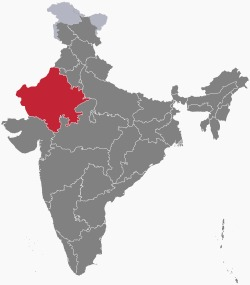
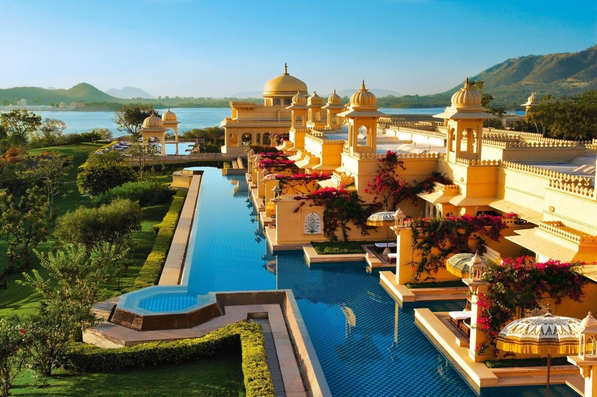
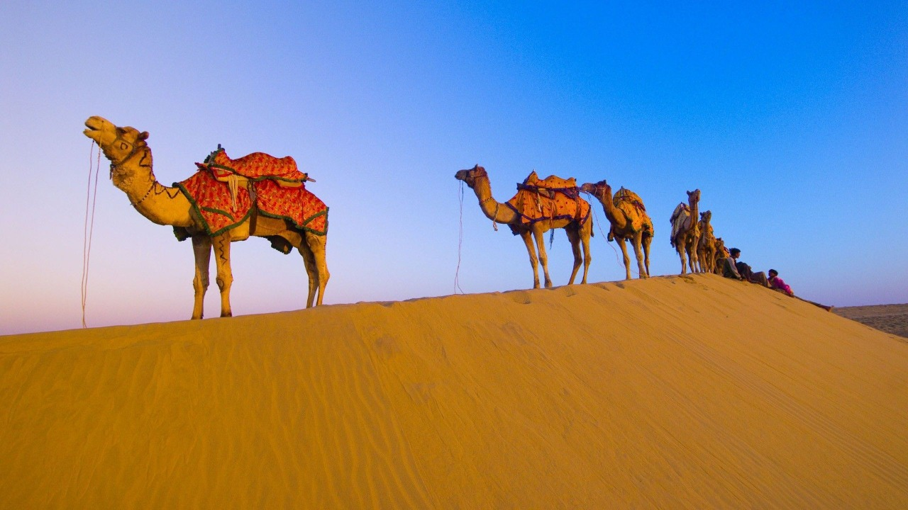
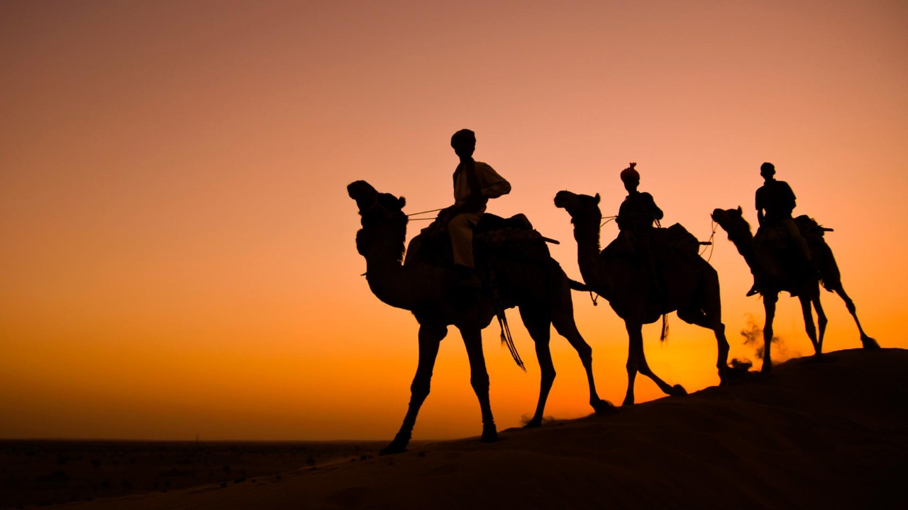

Rajisthan
Rajasthan is a state in northern India. It covers 342,239 square kilometres (132,139 sq mi) or 10.4 per cent of India's total geographical area. It is the largest Indian state by area and the seventh largest by population. It is on India's northwestern side, where it comprises most of the wide and inhospitable Thar Desert (also known as the Great Indian Desert) and shares a border with the Pakistani provinces of Punjab to the northwest and Sindh to the west, along the Sutlej-Indus River valley. It is bordered by five other Indian states: Punjab to the north; Haryana and Uttar Pradesh to the northeast; Madhya Pradesh to the southeast; and Gujarat to the southwest. Its geographical location is 23.3 to 30.12 North latitude and 69.30 to 78.17 East longitude, with the Tropic of Cancer passing through its southernmost tip.

Its major features include the ruins of the Indus Valley civilisation at Kalibangan and Balathal, the Dilwara Temples, a Jain pilgrimage site at Rajasthan's only hill station, Mount Abu, in the ancient Aravalli mountain range and eastern Rajasthan, the Keoladeo National Park of Bharatpur, a World Heritage Site known for its bird life. Rajasthan is also home to three national tiger reserves, the Ranthambore National Park in Sawai Madhopur, Sariska Tiger Reserve in Alwar and the Mukundra Hills Tiger Reserve in Kota.
The state was formed on 30 March 1949 when Rajputana – the name adopted by the British Raj for its dependencies in the region – was merged into the Dominion of India. Its capital and largest city is Jaipur. Other important cities are Jodhpur, Kota, Bikaner, Ajmer, Bharatpur and Udaipur. The economy of Rajasthan is the seventh-largest state economy in India with ₹10.20 lakh crore (US$130 billion) in gross domestic product and a per capita GDP of ₹118,000 (US$1,500). Rajasthan ranks 29th among Indian states in human development index.
|  |  |  |
|---|